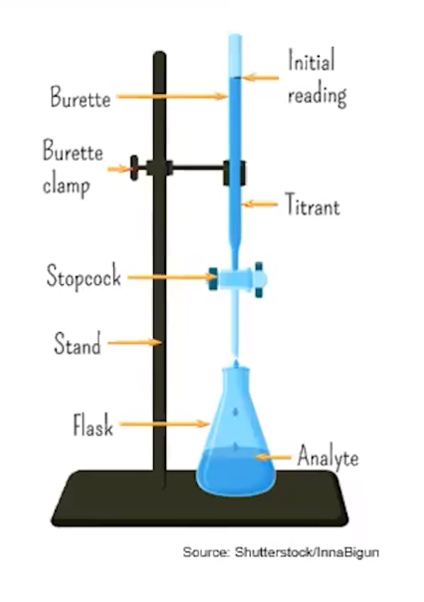
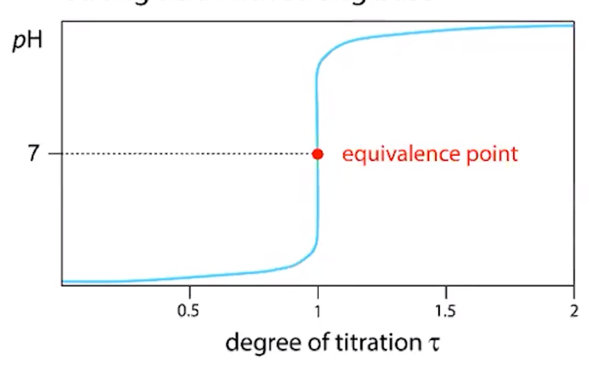

Titration - an experimental technique where a substance of known concentration (the standard solution) is combined with a solution of unknown concentration to determine the amount of moles in the unknown
Titrant - usually the solution of known concentration
Analyte - unknown, in the flask
{width="4.145833333333333in" height="5.885416666666667in"}
Equivalence point
When the amount of titrant added (from the buret) has reacted with ALL the analyte
Indicator that changes color is often added to show when the substance is close to the equivalence point
End point
pH meter is often used to monitor progress in acid-base titration
{width="6.395833333333333in" height="3.9270833333333335in"}
<!-- -->
Redox Titrations